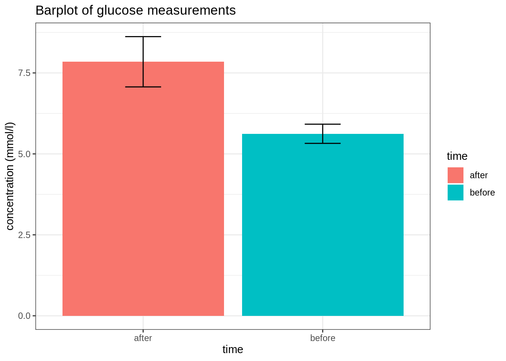
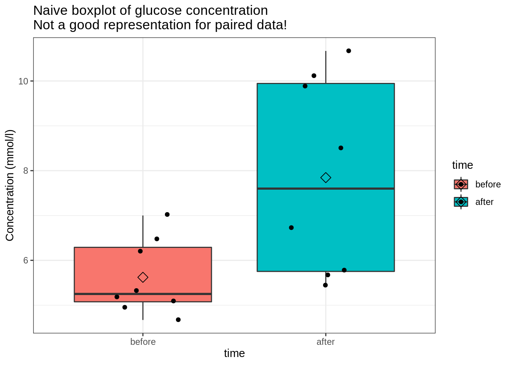
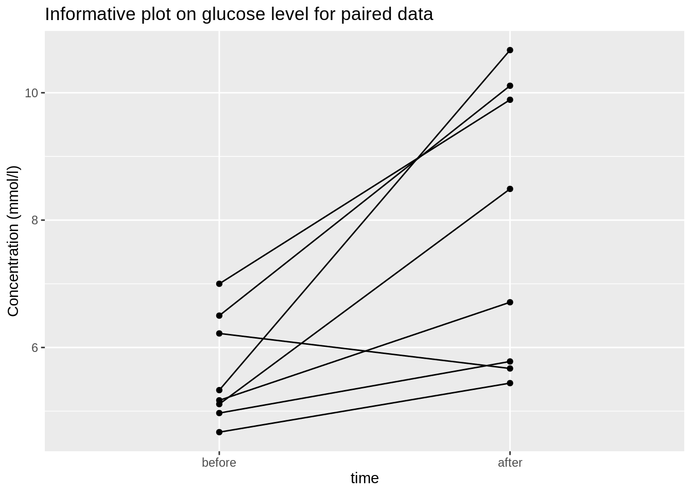
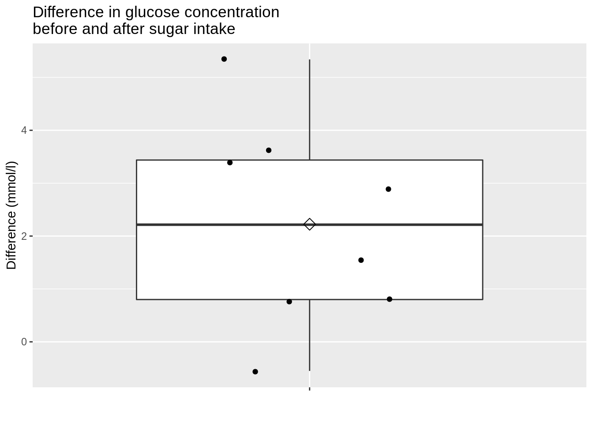
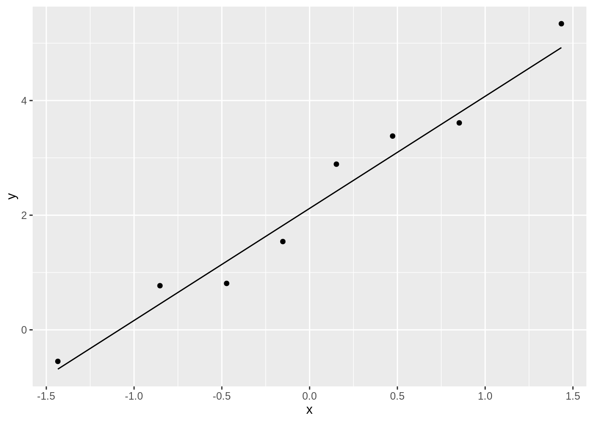

Aims of this exercise
In this exercise, you will acquire the skills to
- recognize paired data
- conduct a data exploration in R for data from paired experimental designs.
- interpret the results of a data exploration for paired experimental designs
The diabetes dataset
The diabetes dataset holds information on a small experiment with 8 patients that are subjected to a glucose tolerance test.
Patients had to fast for eight hours before the test. When the patients entered the hospital their baseline glucose level was measured (mmol/l).
Patients then had to drink 250 ml of a syrupy glucose solution containing 100 grams of sugar. Two hours later, their blood glucose level was measured again.
The data consist of three variables:
- before: glucose concentration upon 8 hours of fasting (mmol/l)
- after: glucose concentration 2 hours after drinking glucose solution (mmol/l).
- patient: identifier for the patient
Import the data
Data path:
https://raw.githubusercontent.com/statOmics/PSLSData/main/diabetes.txt
diabetes <- read_delim("https://raw.githubusercontent.com/statOmics/PSLSData/main/diabetes.txt", delim = " ")
## Rows: 8 Columns: 3
## ── Column specification ──────────────────────────────────────────────
## Delimiter: " "
## chr (1): patient
## dbl (2): before, after
##
## ℹ Use `spec()` to retrieve the full column specification for this data.
## ℹ Specify the column types or set `show_col_types = FALSE` to quiet this message.
Have a first look at the data
## Rows: 8
## Columns: 3
## $ before <dbl> 4.67, 4.97, 5.11, 5.17, 5.33, 6.22, 6.50, 7.00
## $ after <dbl> 5.44, 5.78, 8.49, 6.71, 10.67, 5.67, 10.11, 9.89
## $ patient <chr> "pat1", "pat2", "pat3", "pat4", "pat5", "pat6", "pat…
Data visualization
Note, that the dataset is not in the tidy format. The glucose concentration variable is spread around 2 columns: before and after, while the “time” variable is encoded in the column names instead of in a dedicated column. Data in this form is also called wide data. Instead, we want to transform the data to a long format.
To tidy the data, we can use the gather() function to pivot the data. In this case, we want to “gather” the time (encoded in the column names before and after) and concentration variables (which is encoded in the actual values). The patient column should stay the same. We can specify this with the following syntax.
diabetes_tidy <- diabetes %>%
gather(time, concentration, -patient)
diabetes_tidy
Barplot
Not all visualization types will be equally informative.
A barplot is a plot that you will commonly find in scientific publications. The code for generating such a barplot is provided below:
diabetes_tidy %>%
## Calculate summary statistics for the "concentration" variable for each "time"
group_by(time) %>%
summarize(
mean = mean(concentration, na.rm = TRUE),
sd = sd(concentration, na.rm = TRUE),
n = n()
) %>%
## Compute the standard errors for the means
mutate(se = sd / sqrt(n)) %>%
ggplot(aes(x = time, y = mean, fill = time)) +
theme_bw() +
geom_bar(stat = "identity") +
geom_errorbar(aes(ymin = mean - se, ymax = mean + se), width = 0.2) +
ggtitle("Barplot of glucose measurements") +
ylab("concentration (mmol/l)")

A barplot, however, is not very informative. The height of the bars only provides us with information of the mean blood pressure. However, we don’t see the actual underlying values, so we for instance don’t have any information on the spread of the data. It is usually more informative to represent to underlying values as raw as possible. Note that it is possible to add the raw data on the barplot, but we still would not see any measures of the spread, such as the interquartile range.
Another crucial aspect of the data are also not displayed: the data are paired!
Based on these critisisms, can you think of a better visualization strategy for the captopril data?
Add your proposed visualization strategy here
It is usually more informative to represent to underlying values as raw as possible. Boxplots are ideal for this.
## Recode the `time` variable so "before" is the first level
diabetes_tidy <- diabetes_tidy %>%
mutate(time = as.factor(time)) %>%
mutate(time = relevel(time, "before"))
diabetes_tidy %>%
ggplot(aes(x = time, y = concentration, fill = time)) +
theme_bw() +
geom_boxplot(outlier.shape = NA) +
geom_jitter(width = 0.2) +
stat_summary(
fun = mean, geom = "point",
shape = 5, size = 3,
color = "black"
) +
ggtitle("Naive boxplot of glucose concentration\nNot a good representation for paired data!") +
ylab("Concentration (mmol/l)")

Note, however that for these data the boxplots are missing a crucial part of the information: The data are paired!
So the boxplots of glucose measurements before and after the are not telling the full story! The boxplot is thus not a good plot for exploring the data of the diabetes dataset!
Paired data
A line plot is a better plot for paired data! Note that we also convert the variable time in a factor first and relevel it so that the concentration before is plotted first.
diabetes_tidy %>%
ggplot(aes(x = time, y = concentration)) +
geom_point() +
geom_line(aes(group = patient)) +
ylab("Concentration (mmol/l)") +
ggtitle("Informative plot on glucose level for paired data")

We observe that the glucose concentrations increase for almost all patients! This is a plot that shows all features in the data and clearly indicates that the data are paired.
Alternatively, we might plot calculate the differences in glucose levels after and before dosing glucose first and make a boxplot of the differences!
diabetes_diff <- diabetes_tidy %>%
group_by(patient) %>%
summarize(difference = diff(concentration))
diabetes_diff
diabetes_diff %>%
ggplot(aes(x = "", y = difference)) +
geom_boxplot(outlier.shape = NA) +
geom_jitter(width = 0.2) +
xlab("") +
ylab("Difference (mmol/l)") +
stat_summary(
fun = mean, geom = "point",
shape = 5, size = 3,
color = "black"
) +
ggtitle("Difference in glucose concentration\nbefore and after sugar intake")

The mean difference in glucose concentration is higher zero. It seems that dosing glucose has increased the glucose concentration on average with around 2 mmol/l. In the next exercises, we will learn how we can test if this increase is statistically significant.
QQ-plot
We can now assess if the differences are normally distributed.
diabetes_diff %>%
ggplot(aes(sample = difference)) +
geom_qq() +
geom_qq_line()

The differences in glucose concentration appears to be normally distributed.
Descriptive statistics
- Generate a code chunk to calculate useful summary statistics for the diabetes data
diabetes_tidy %>%
group_by(time) %>%
summarize(
mean = mean(concentration, na.rm = TRUE),
sd = sd(concentration, na.rm = TRUE),
n = n()
) %>%
## Compute the standard errors for the means
mutate(se = sd / sqrt(n))
LS0tCnRpdGxlOiAiRXhlcmNpc2UgNC4zOiBFeHBsb3JpbmcgdGhlIGRpYWJldGVzIGRhdGFzZXQgLSBzb2x1dGlvbiIKYXV0aG9yOiAiTGlldmVuIENsZW1lbnQsIEplcm9lbiBHaWxpcyBhbmQgTWlsYW4gTWFsZmFpdCIKZGF0ZTogInN0YXRPbWljcywgR2hlbnQgVW5pdmVyc2l0eSAoaHR0cHM6Ly9zdGF0b21pY3MuZ2l0aHViLmlvKSIKLS0tCgojIEFpbXMgb2YgdGhpcyBleGVyY2lzZQoKSW4gdGhpcyBleGVyY2lzZSwgeW91IHdpbGwgYWNxdWlyZSB0aGUgc2tpbGxzIHRvCgotIHJlY29nbml6ZSBwYWlyZWQgZGF0YQotIGNvbmR1Y3QgYSBkYXRhIGV4cGxvcmF0aW9uIGluIFIgZm9yIGRhdGEgZnJvbQpwYWlyZWQgZXhwZXJpbWVudGFsIGRlc2lnbnMuCi0gaW50ZXJwcmV0IHRoZSByZXN1bHRzIG9mIGEgZGF0YSBleHBsb3JhdGlvbiBmb3IgcGFpcmVkIGV4cGVyaW1lbnRhbCBkZXNpZ25zCgojIFRoZSBkaWFiZXRlcyBkYXRhc2V0CgpUaGUgYGRpYWJldGVzIGRhdGFzZXRgIGhvbGRzIGluZm9ybWF0aW9uIG9uIGEgc21hbGwgZXhwZXJpbWVudCB3aXRoCjggcGF0aWVudHMgdGhhdCBhcmUgc3ViamVjdGVkIHRvICBhIGdsdWNvc2UgdG9sZXJhbmNlIHRlc3QuCgoKUGF0aWVudHMgaGFkIHRvIGZhc3QgZm9yIGVpZ2h0IGhvdXJzIGJlZm9yZSB0aGUgdGVzdC4KV2hlbiB0aGUgcGF0aWVudHMgZW50ZXJlZCB0aGUgaG9zcGl0YWwgdGhlaXIgYmFzZWxpbmUgZ2x1Y29zZSBsZXZlbCB3YXMgbWVhc3VyZWQgKG1tb2wvbCkuCgpQYXRpZW50cyB0aGVuICBoYWQgdG8gZHJpbmsgMjUwIG1sIG9mIGEgc3lydXB5IGdsdWNvc2Ugc29sdXRpb24gY29udGFpbmluZyAxMDAgZ3JhbXMgb2Ygc3VnYXIuClR3byBob3VycyBsYXRlciwgdGhlaXIgYmxvb2QgZ2x1Y29zZSBsZXZlbCB3YXMgbWVhc3VyZWQgYWdhaW4uCgpUaGUgZGF0YSBjb25zaXN0IG9mIHRocmVlIHZhcmlhYmxlczoKCi0gYmVmb3JlOiBnbHVjb3NlIGNvbmNlbnRyYXRpb24gdXBvbiA4IGhvdXJzIG9mIGZhc3RpbmcgKG1tb2wvbCkKLSBhZnRlcjogZ2x1Y29zZSBjb25jZW50cmF0aW9uIDIgaG91cnMgYWZ0ZXIgZHJpbmtpbmcgZ2x1Y29zZSBzb2x1dGlvbiAobW1vbC9sKS4KLSBwYXRpZW50OiBpZGVudGlmaWVyIGZvciB0aGUgcGF0aWVudAoKIyBJbXBvcnQgdGhlIGRhdGEKCkRhdGEgcGF0aDoKCiAgYGh0dHBzOi8vcmF3LmdpdGh1YnVzZXJjb250ZW50LmNvbS9zdGF0T21pY3MvUFNMU0RhdGEvbWFpbi9kaWFiZXRlcy50eHRgCgpgYGB7ciwgbWVzc2FnZT1GQUxTRSwgd2FybmluZz1GQUxTRX0KbGlicmFyeSh0aWR5dmVyc2UpCmBgYAoKYGBge3J9CmRpYWJldGVzIDwtIHJlYWRfZGVsaW0oImh0dHBzOi8vcmF3LmdpdGh1YnVzZXJjb250ZW50LmNvbS9zdGF0T21pY3MvUFNMU0RhdGEvbWFpbi9kaWFiZXRlcy50eHQiLCBkZWxpbSA9ICIgIikKYGBgCgpIYXZlIGEgZmlyc3QgbG9vayBhdCB0aGUgZGF0YQoKYGBge3J9CmdsaW1wc2UoZGlhYmV0ZXMpCmhlYWQoZGlhYmV0ZXMpCmBgYAoKIyBEYXRhIHZpc3VhbGl6YXRpb24KCk5vdGUsIHRoYXQgdGhlIGRhdGFzZXQgaXMgbm90IGluIHRoZSB0aWR5IGZvcm1hdC4gVGhlIGdsdWNvc2UgY29uY2VudHJhdGlvbgp2YXJpYWJsZSBpcyBzcHJlYWQgYXJvdW5kIDIgY29sdW1uczogYGJlZm9yZWAgYW5kIGBhZnRlcmAsIHdoaWxlIHRoZSAidGltZSIKdmFyaWFibGUgaXMgZW5jb2RlZCBpbiB0aGUgY29sdW1uIG5hbWVzIGluc3RlYWQgb2YgaW4gYSBkZWRpY2F0ZWQgY29sdW1uLiBEYXRhCmluIHRoaXMgZm9ybSBpcyBhbHNvIGNhbGxlZCAqd2lkZSogZGF0YS4gSW5zdGVhZCwgd2Ugd2FudCB0byB0cmFuc2Zvcm0gdGhlIGRhdGEKdG8gYSAqbG9uZyogZm9ybWF0LgoKVG8gdGlkeSB0aGUgZGF0YSwgd2UgY2FuIHVzZSB0aGUgYGdhdGhlcigpYCBmdW5jdGlvbiB0bwpbcGl2b3RdKGh0dHBzOi8vcjRkcy5oYWQuY28ubnovdGlkeS1kYXRhLmh0bWwjcGl2b3RpbmcpIHRoZSBkYXRhLiBJbiB0aGlzIGNhc2UsCndlIHdhbnQgdG8gImdhdGhlciIgdGhlIGB0aW1lYCAoZW5jb2RlZCBpbiB0aGUgY29sdW1uIG5hbWVzIGBiZWZvcmVgIGFuZApgYWZ0ZXJgKSBhbmQgYGNvbmNlbnRyYXRpb25gIHZhcmlhYmxlcyAod2hpY2ggaXMgZW5jb2RlZCBpbiB0aGUgYWN0dWFsIHZhbHVlcykuClRoZSBgcGF0aWVudGAgY29sdW1uIHNob3VsZCBzdGF5IHRoZSBzYW1lLiBXZSBjYW4gc3BlY2lmeSB0aGlzIHdpdGggdGhlCmZvbGxvd2luZyBzeW50YXguCgpgYGB7cn0KZGlhYmV0ZXNfdGlkeSA8LSBkaWFiZXRlcyAlPiUKICBnYXRoZXIodGltZSwgY29uY2VudHJhdGlvbiwgLXBhdGllbnQpCmRpYWJldGVzX3RpZHkKYGBgCgojIyBCYXJwbG90CgpOb3QgYWxsIHZpc3VhbGl6YXRpb24gdHlwZXMgd2lsbCBiZSBlcXVhbGx5IGluZm9ybWF0aXZlLgoKQSBiYXJwbG90IGlzIGEgcGxvdCB0aGF0IHlvdSB3aWxsCmNvbW1vbmx5IGZpbmQgaW4gc2NpZW50aWZpYyBwdWJsaWNhdGlvbnMuClRoZSBjb2RlIGZvciBnZW5lcmF0aW5nIHN1Y2ggYSBiYXJwbG90CmlzIHByb3ZpZGVkIGJlbG93OgoKYGBge3J9CmRpYWJldGVzX3RpZHkgJT4lCiAgIyMgQ2FsY3VsYXRlIHN1bW1hcnkgc3RhdGlzdGljcyBmb3IgdGhlICJjb25jZW50cmF0aW9uIiB2YXJpYWJsZSBmb3IgZWFjaCAidGltZSIKICBncm91cF9ieSh0aW1lKSAlPiUKICBzdW1tYXJpemUoCiAgICBtZWFuID0gbWVhbihjb25jZW50cmF0aW9uLCBuYS5ybSA9IFRSVUUpLAogICAgc2QgPSBzZChjb25jZW50cmF0aW9uLCBuYS5ybSA9IFRSVUUpLAogICAgbiA9IG4oKQogICkgJT4lCiAgIyMgQ29tcHV0ZSB0aGUgc3RhbmRhcmQgZXJyb3JzIGZvciB0aGUgbWVhbnMKICBtdXRhdGUoc2UgPSBzZCAvIHNxcnQobikpICU+JQogIGdncGxvdChhZXMoeCA9IHRpbWUsIHkgPSBtZWFuLCBmaWxsID0gdGltZSkpICsKICB0aGVtZV9idygpICsKICBnZW9tX2JhcihzdGF0ID0gImlkZW50aXR5IikgKwogIGdlb21fZXJyb3JiYXIoYWVzKHltaW4gPSBtZWFuIC0gc2UsIHltYXggPSBtZWFuICsgc2UpLCB3aWR0aCA9IDAuMikgKwogIGdndGl0bGUoIkJhcnBsb3Qgb2YgZ2x1Y29zZSBtZWFzdXJlbWVudHMiKSArCiAgeWxhYigiY29uY2VudHJhdGlvbiAobW1vbC9sKSIpCmBgYAoKCkEgYmFycGxvdCwgaG93ZXZlciwgaXMgbm90IHZlcnkgaW5mb3JtYXRpdmUuClRoZSBoZWlnaHQgb2YgdGhlCmJhcnMgb25seSBwcm92aWRlcyB1cyB3aXRoIGluZm9ybWF0aW9uIG9mIHRoZSBtZWFuIGJsb29kIHByZXNzdXJlLgpIb3dldmVyLCB3ZSBkb24ndCBzZWUgdGhlIGFjdHVhbCB1bmRlcmx5aW5nIHZhbHVlcywgc28gd2UgZm9yCmluc3RhbmNlIGRvbid0IGhhdmUgYW55IGluZm9ybWF0aW9uIG9uIHRoZSBzcHJlYWQgb2YgdGhlIGRhdGEuCkl0IGlzIHVzdWFsbHkgbW9yZSBpbmZvcm1hdGl2ZSB0byByZXByZXNlbnQgdG8gdW5kZXJseWluZwp2YWx1ZXMgYXMgX3Jhd18gYXMgcG9zc2libGUuCk5vdGUgdGhhdCBpdCBpcyBwb3NzaWJsZSB0byBhZGQgdGhlCnJhdyBkYXRhIG9uIHRoZSBiYXJwbG90LCBidXQgd2Ugc3RpbGwgd291bGQgbm90IHNlZSBhbnkgbWVhc3VyZXMKb2YgdGhlIHNwcmVhZCwgc3VjaCBhcyB0aGUgaW50ZXJxdWFydGlsZSByYW5nZS4KCkFub3RoZXIgY3J1Y2lhbCBhc3BlY3Qgb2YgdGhlIGRhdGEgYXJlIGFsc28gbm90IGRpc3BsYXllZDoKdGhlIGRhdGEgYXJlIHBhaXJlZCEKCioqQmFzZWQgb24gdGhlc2UgY3JpdGlzaXNtcywgY2FuIHlvdSB0aGluayBvZiBhIGJldHRlcioqCioqdmlzdWFsaXphdGlvbiBzdHJhdGVneSBmb3IgdGhlIGNhcHRvcHJpbCBkYXRhPyoqCgoqKkFkZCB5b3VyIHByb3Bvc2VkIHZpc3VhbGl6YXRpb24gc3RyYXRlZ3kgaGVyZSoqCgpJdCBpcyB1c3VhbGx5IG1vcmUgaW5mb3JtYXRpdmUgdG8gcmVwcmVzZW50IHRvIHVuZGVybHlpbmcKdmFsdWVzIGFzIF9yYXdfIGFzIHBvc3NpYmxlLiBCb3hwbG90cyBhcmUgaWRlYWwgZm9yIHRoaXMuCgpgYGB7cn0KIyMgUmVjb2RlIHRoZSBgdGltZWAgdmFyaWFibGUgc28gImJlZm9yZSIgaXMgdGhlIGZpcnN0IGxldmVsCmRpYWJldGVzX3RpZHkgPC0gZGlhYmV0ZXNfdGlkeSAlPiUKICBtdXRhdGUodGltZSA9IGFzLmZhY3Rvcih0aW1lKSkgJT4lCiAgbXV0YXRlKHRpbWUgPSByZWxldmVsKHRpbWUsICJiZWZvcmUiKSkKCmRpYWJldGVzX3RpZHkgJT4lCiAgZ2dwbG90KGFlcyh4ID0gdGltZSwgeSA9IGNvbmNlbnRyYXRpb24sIGZpbGwgPSB0aW1lKSkgKwogIHRoZW1lX2J3KCkgKwogIGdlb21fYm94cGxvdChvdXRsaWVyLnNoYXBlID0gTkEpICsKICBnZW9tX2ppdHRlcih3aWR0aCA9IDAuMikgKwogIHN0YXRfc3VtbWFyeSgKICAgIGZ1biA9IG1lYW4sIGdlb20gPSAicG9pbnQiLAogICAgc2hhcGUgPSA1LCBzaXplID0gMywKICAgIGNvbG9yID0gImJsYWNrIgogICkgKwogIGdndGl0bGUoIk5haXZlIGJveHBsb3Qgb2YgZ2x1Y29zZSBjb25jZW50cmF0aW9uXG5Ob3QgYSBnb29kIHJlcHJlc2VudGF0aW9uIGZvciBwYWlyZWQgZGF0YSEiKSArCiAgeWxhYigiQ29uY2VudHJhdGlvbiAobW1vbC9sKSIpCmBgYAoKTm90ZSwgaG93ZXZlciB0aGF0IGZvciB0aGVzZSBkYXRhIHRoZSBib3hwbG90cyBhcmUgbWlzc2luZyBhIGNydWNpYWwgcGFydCBvZiB0aGUgaW5mb3JtYXRpb246IFRoZSBkYXRhIGFyZSBwYWlyZWQhCgpTbyB0aGUgYm94cGxvdHMgb2YgZ2x1Y29zZSBtZWFzdXJlbWVudHMgYmVmb3JlIGFuZCBhZnRlciB0aGUgIGFyZSBub3QgdGVsbGluZyB0aGUgZnVsbCBzdG9yeSEgVGhlIGJveHBsb3QgaXMgdGh1cyBub3QgYSBnb29kIHBsb3QgZm9yIGV4cGxvcmluZyB0aGUgZGF0YSBvZiB0aGUgZGlhYmV0ZXMgZGF0YXNldCEKCiMjIFBhaXJlZCBkYXRhCgpBIGxpbmUgcGxvdCBpcyBhIGJldHRlciBwbG90IGZvciBwYWlyZWQgZGF0YSEKTm90ZSB0aGF0IHdlIGFsc28gY29udmVydCB0aGUgdmFyaWFibGUgdGltZSBpbiBhIGZhY3RvciBmaXJzdCBhbmQgcmVsZXZlbCBpdCBzbyB0aGF0IHRoZSBjb25jZW50cmF0aW9uIGJlZm9yZSBpcyBwbG90dGVkIGZpcnN0LgoKYGBge3J9CmRpYWJldGVzX3RpZHkgJT4lCiAgZ2dwbG90KGFlcyh4ID0gdGltZSwgeSA9IGNvbmNlbnRyYXRpb24pKSArCiAgZ2VvbV9wb2ludCgpICsKICBnZW9tX2xpbmUoYWVzKGdyb3VwID0gcGF0aWVudCkpICsKICB5bGFiKCJDb25jZW50cmF0aW9uIChtbW9sL2wpIikgKwogIGdndGl0bGUoIkluZm9ybWF0aXZlIHBsb3Qgb24gZ2x1Y29zZSBsZXZlbCBmb3IgcGFpcmVkIGRhdGEiKQpgYGAKCldlIG9ic2VydmUgdGhhdCB0aGUgZ2x1Y29zZSBjb25jZW50cmF0aW9ucyBpbmNyZWFzZSBmb3IgYWxtb3N0IGFsbCBwYXRpZW50cyEKVGhpcyBpcyBhIHBsb3QgdGhhdCBzaG93cyBhbGwgZmVhdHVyZXMgaW4gdGhlIGRhdGEgYW5kIGNsZWFybHkgaW5kaWNhdGVzIHRoYXQgdGhlIGRhdGEgYXJlIHBhaXJlZC4KCkFsdGVybmF0aXZlbHksIHdlIG1pZ2h0IHBsb3QgY2FsY3VsYXRlIHRoZSBkaWZmZXJlbmNlcyBpbiBnbHVjb3NlIGxldmVscyBhZnRlciBhbmQgYmVmb3JlIGRvc2luZyBnbHVjb3NlIGZpcnN0IGFuZCBtYWtlIGEgYm94cGxvdCBvZiB0aGUgZGlmZmVyZW5jZXMhCgpgYGB7cn0KZGlhYmV0ZXNfZGlmZiA8LSBkaWFiZXRlc190aWR5ICU+JQogIGdyb3VwX2J5KHBhdGllbnQpICU+JQogIHN1bW1hcml6ZShkaWZmZXJlbmNlID0gZGlmZihjb25jZW50cmF0aW9uKSkKZGlhYmV0ZXNfZGlmZgpgYGAKCmBgYHtyfQpkaWFiZXRlc19kaWZmICU+JQogIGdncGxvdChhZXMoeCA9ICIiLCB5ID0gZGlmZmVyZW5jZSkpICsKICBnZW9tX2JveHBsb3Qob3V0bGllci5zaGFwZSA9IE5BKSArCiAgZ2VvbV9qaXR0ZXIod2lkdGggPSAwLjIpICsKICB4bGFiKCIiKSArCiAgeWxhYigiRGlmZmVyZW5jZSAobW1vbC9sKSIpICsKICBzdGF0X3N1bW1hcnkoCiAgICBmdW4gPSBtZWFuLCBnZW9tID0gInBvaW50IiwKICAgIHNoYXBlID0gNSwgc2l6ZSA9IDMsCiAgICBjb2xvciA9ICJibGFjayIKICApICsKICBnZ3RpdGxlKCJEaWZmZXJlbmNlIGluIGdsdWNvc2UgY29uY2VudHJhdGlvblxuYmVmb3JlIGFuZCBhZnRlciBzdWdhciBpbnRha2UiKQpgYGAKClRoZSBtZWFuIGRpZmZlcmVuY2UgaW4gZ2x1Y29zZSBjb25jZW50cmF0aW9uIGlzIGhpZ2hlciB6ZXJvLiBJdCBzZWVtcyB0aGF0IGRvc2luZyBnbHVjb3NlIGhhcyBpbmNyZWFzZWQgdGhlIGdsdWNvc2UgY29uY2VudHJhdGlvbiBvbiBhdmVyYWdlIHdpdGggYXJvdW5kIDIgbW1vbC9sLgpJbiB0aGUgbmV4dCBleGVyY2lzZXMsIHdlIHdpbGwKbGVhcm4gaG93IHdlIGNhbiB0ZXN0IGlmIHRoaXMgaW5jcmVhc2UgaXMgc3RhdGlzdGljYWxseSBzaWduaWZpY2FudC4KCiMjIFFRLXBsb3QKCldlIGNhbiBub3cgYXNzZXNzIGlmIHRoZSBkaWZmZXJlbmNlcyBhcmUgbm9ybWFsbHkgZGlzdHJpYnV0ZWQuCgpgYGB7cn0KZGlhYmV0ZXNfZGlmZiAlPiUKICBnZ3Bsb3QoYWVzKHNhbXBsZSA9IGRpZmZlcmVuY2UpKSArCiAgZ2VvbV9xcSgpICsKICBnZW9tX3FxX2xpbmUoKQpgYGAKClRoZSBkaWZmZXJlbmNlcyBpbiBnbHVjb3NlIGNvbmNlbnRyYXRpb24gYXBwZWFycyB0byBiZSBub3JtYWxseSBkaXN0cmlidXRlZC4KCiMgRGVzY3JpcHRpdmUgc3RhdGlzdGljcwoKLSBHZW5lcmF0ZSBhIGNvZGUgY2h1bmsgdG8gY2FsY3VsYXRlIHVzZWZ1bCBzdW1tYXJ5IHN0YXRpc3RpY3MgZm9yCnRoZSBkaWFiZXRlcyBkYXRhCgpgYGB7cn0KZGlhYmV0ZXNfdGlkeSAlPiUKICBncm91cF9ieSh0aW1lKSAlPiUKICBzdW1tYXJpemUoCiAgICBtZWFuID0gbWVhbihjb25jZW50cmF0aW9uLCBuYS5ybSA9IFRSVUUpLAogICAgc2QgPSBzZChjb25jZW50cmF0aW9uLCBuYS5ybSA9IFRSVUUpLAogICAgbiA9IG4oKQogICkgJT4lCiAgIyMgQ29tcHV0ZSB0aGUgc3RhbmRhcmQgZXJyb3JzIGZvciB0aGUgbWVhbnMKICBtdXRhdGUoc2UgPSBzZCAvIHNxcnQobikpCmBgYAo=